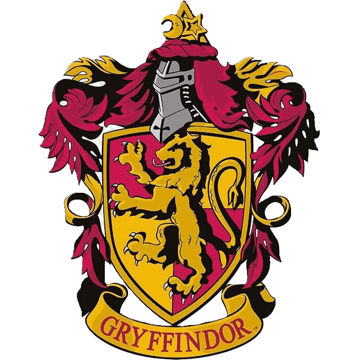

Hogwarts
Hogwarts, a instituição lendária de magia e bruxaria, não é apenas
uma escola; é um lar, um refúgio, e um campo de treinamento para as
mentes jovens do mundo mágico. Fundada há mais de mil anos pelos
notáveis bruxos Godric Gryffindor, Salazar Slytherin, Rowena
Ravenclaw e Helga Hufflepuff, Hogwarts se ergue como um bastião da
aprendizagem mágica e do desenvolvimento pessoal. As quatro casas da
escola: Gryffindor, Slytherin, Ravenclaw e Hufflepuff, são mais do
que meros grupos de alojamento; elas são uma família, uma
comunidade, e um espelho dos valores e das qualidades que a escola
deseja instilar em seus alunos. A Sala Precisa, um quarto que só
aparece quando um verdadeiro necessitado a convoca, é tão misteriosa
quanto maravilhosa, adaptando-se instantaneamente às necessidades do
seu usuário. Por outro lado, o Beco Diagonal serve como um vínculo
com o mundo exterior, oferecendo aos estudantes de Hogwarts tudo o
que podem precisar, desde varinhas e caldeirões até corujas e
vassouras.
O castelo de Hogwarts é uma maravilha arquitetônica, repleto de corredores que se desdobram em salas encantadas, escadarias que mudam de lugar, e pinturas que conversam e se movem. O Salão Principal, com seu teto encantado que reflete o céu exterior, é o coração da escola, onde estudantes e professores se reúnem para refeições e celebrações, unidos sob a luz cintilante de milhares de velas flutuantes. A Biblioteca de Hogwarts é um tesouro de conhecimento, repleta de livros que vão desde textos padrão de feitiços até obras raras que sussurram segredos antigos em ouvidos dispostos a escutar.Além dos lugares emblemáticos, Hogwarts é habitada por uma variedade de criaturas mágicas, desde os nobres centauros que habitam a Floresta Proibida até os elfos domésticos que trabalham nos bastidores para garantir o bom funcionamento da escola. Cada pedra do castelo, cada árvore no terreno da escola, respira magia e história, com segredos antigos e aventuras escondidas esperando para serem descobertas.
Casas de Hogwarts
Slytherin
A casa Slytherin, fundada por Salazar Slytherin, é conhecida por valorizar a ambição, a astúcia e o sangue puro. Slytherins são conhecidos por sua liderança determinada e falta de medo diante da ambição. Enquanto frequentemente mal interpretados, muitos Slytherins possuem uma complexidade de caráter que vai além do estereótipo do antagonista.
Ravenclaw
A casa Ravenclaw, fundada por Rowena Ravenclaw, celebra a inteligência, a criatividade e a sabedoria. Os membros desta casa são caracterizados por sua mente aguçada, seu amor pelo aprendizado e sua capacidade de pensar de maneira original. Ravenclaws são visionários, frequentemente perdidos em seus pensamentos e descobertas inovadoras.
Hufflepuff
Hufflepuff, a casa mais inclusiva em Hogwarts, foi fundada por Helga Hufflepuff. É conhecida por valorizar o trabalho duro, a dedicação, a paciência e a lealdade. Hufflepuffs são confiáveis e justos, muitas vezes agindo como mediadores entre as casas. São os pacificadores que oferecem uma base sólida para a comunidade de Hogwarts.
Gryffindor
Gryffindor, a casa dos corajosos e audaciosos, foi fundada por Godric Gryffindor. Valoriza a coragem, a bravura e a nobreza. Gryffindors são conhecidos por sua disposição de lutar pelo que é certo e sua inabalável lealdade. Esta é a casa dos que têm corações de leões, prontos para enfrentar qualquer desafio.